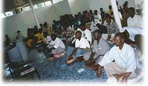

[Lomé]
Après avoir apprécié une retraite de deux jours, qui se tenait en même temps que la récente retraite internationale en Corée, les disciples du Togo désiraient ardemment plus de nourriture spirituelle. Nous avons organisé alors une retraite de deux jours et demi en Afrique de l'Ouest. Beaucoup de disciples venus de six villes du Ghana, du Bénin et du Togo y ont participé.
| 
|
Après deux récentes retraites, les initiés de l'Afrique de l'Ouest sont beaucoup plus forts et attendent avec impatience la prochaine retraite
|
Cette retraite avait lieu afin de célébrer la renaissance spirituelle du Ghana et du Bénin. Ces derniers mois, ces deux pays se sont spirituellement épanouis, rejoignant notre grande famille universelle.
Le programme de cette retraite était identique à ceux des retraites internationales de Maître, et comprenait de nombreuses méditations, des vidéos, et de la nourriture africaine épicée ; mais il manquait, bien sûr, le principal ingrédient : la présence physique de notre Maître bien-aimée.
Bien qu'elle n'ait pas été présente physiquement, nous avons tous senti le pouvoir de bénédiction de Maître durant cette retraite. Une nuit, par exemple, nous nous sommes levés et avons remarqué que le ciel au-dessus du centre était dégagé, alors qu'il y avait des nuages partout ailleurs. Cela nous a rappelé la remarque de Maître disant que la Lumière émanant d'un groupe de méditation est si forte qu'elle peut faire disparaître les nuages.
La plupart des disciples ont dit que la Lumière et le Son intérieurs étaient beaucoup plus forts pour eux pendant la retraite, et beaucoup ont eu des expériences intenses. Tout s'est déroulé sans incidents, comme si cela avait été parfaitement planifié par Maître ! Jusqu'au désagrément d'un si grand groupe travaillant, agissant ensemble et méditant dans une seule maison, qui ne s'est pas même remarqué, car nous nous déplacions comme si nous étions un, chacun s'aidant et se soutenant.